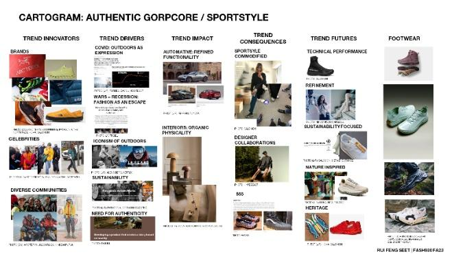
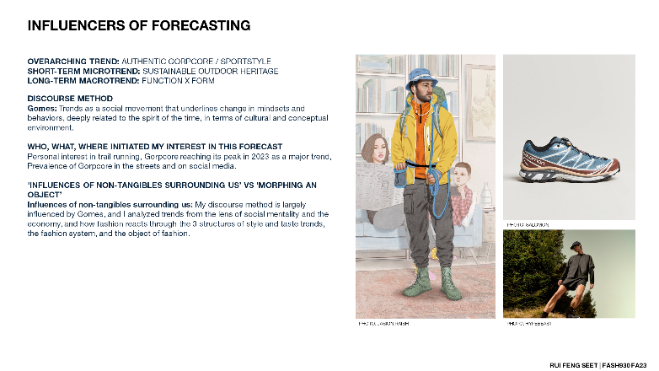
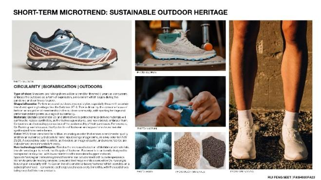
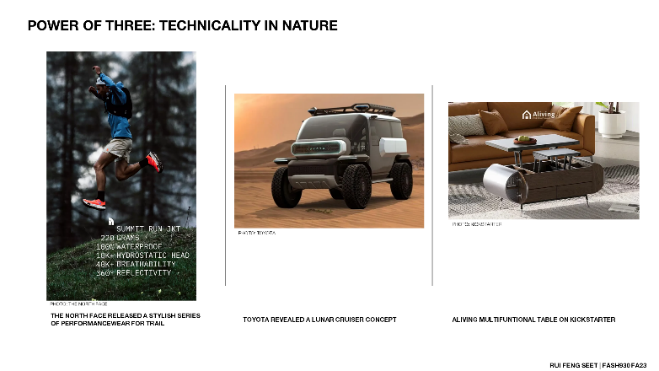
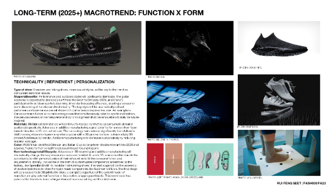

Midterm project for a Footwear Materials, Color & Trend Analysis course at Lasell University. The objective was to develop a full trend report in one week. I selected Gorpcore as my trend for analysis.
I developed an understanding of the different lenses and techniques used in trend analysis. Using these techniques, I researched industry trends via forecasting services like WGSN to identify short-term microtrends and long-term macrotrends, gaining insight into the footwear product ecosystem and how marketing, product line management, and design shape the work footwear developers do.




